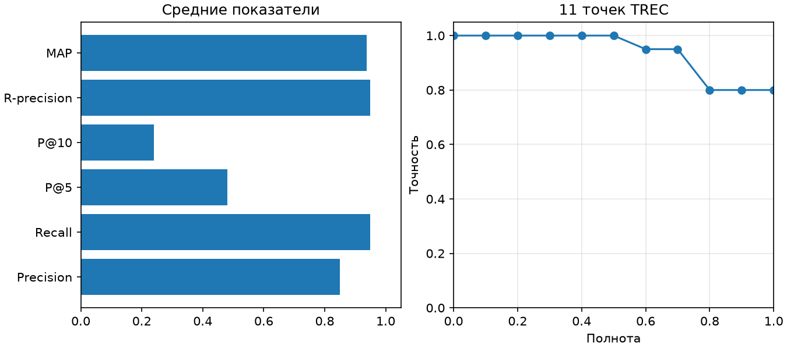

Precision: 0.8500; Recall: 0.9500; P@5: 0.4800; P@10: 0.2400; R-precision: 0.9500; MAP: 0.9375
| query | Precision | Recall | AP | P@5 | P@10 | R-precision |
|---|---|---|---|---|---|---|
| python programming | 0.75 | 0.75 | 0.6875 | 0.6 | 0.3 | 0.75 |
| database SQL | 1.0 | 1.0 | 1.0 | 0.4 | 0.2 | 1.0 |
| probabilistic search ranking | 1.0 | 1.0 | 1.0 | 0.6 | 0.3 | 1.0 |
| web HTTP requests | 1.0 | 1.0 | 1.0 | 0.4 | 0.2 | 1.0 |
| search precision recall | 0.5 | 1.0 | 1.0 | 0.4 | 0.2 | 1.0 |

Оценки 1 и 2 считаются релевантными. P@5/P@10 делятся на 5/10; запросы с R=0 исключены из средних. MAP — среднее AP.